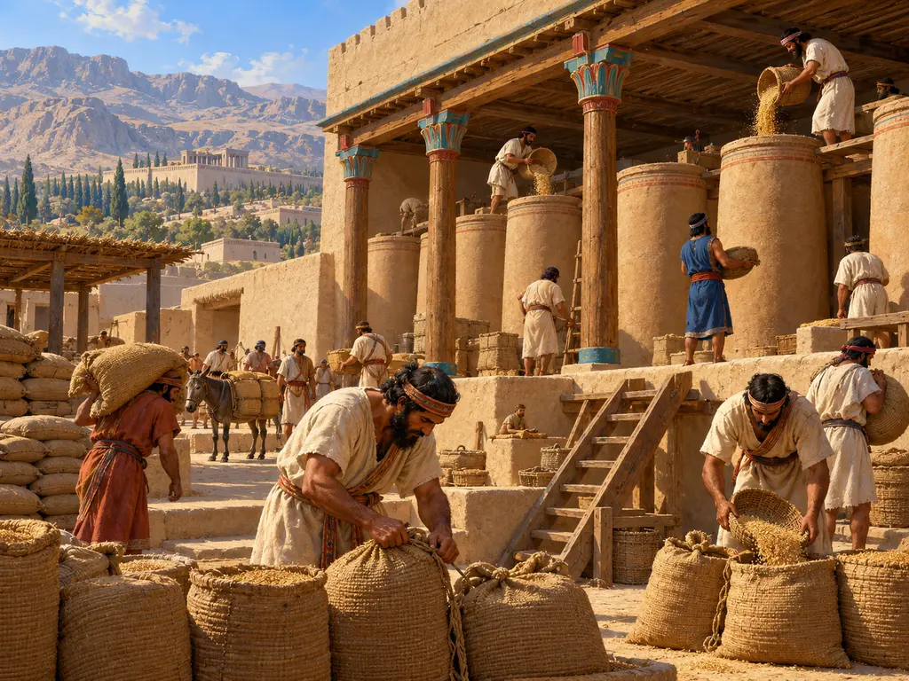
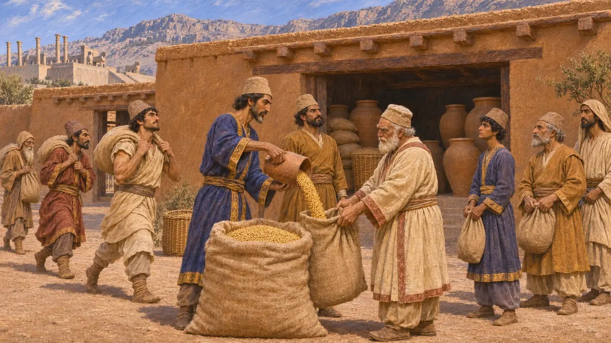
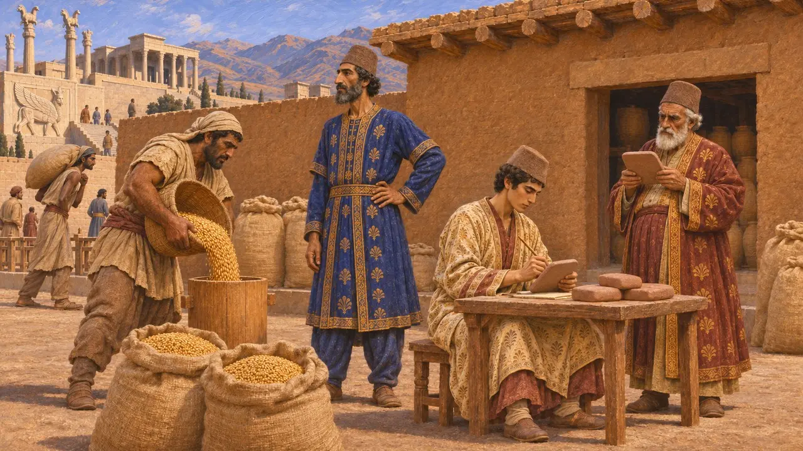
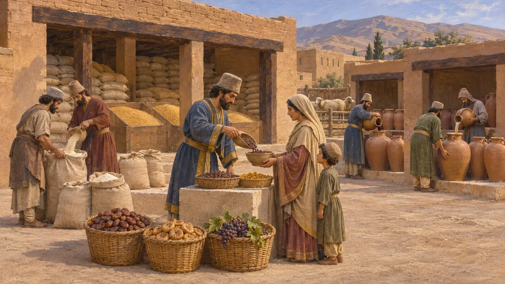
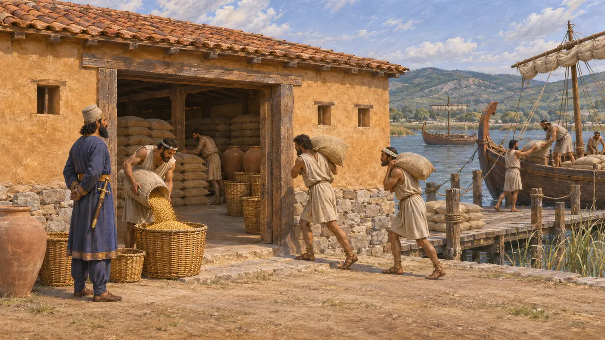
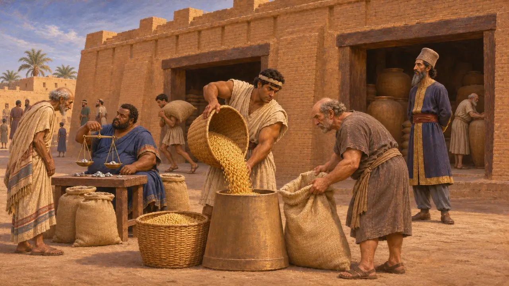

مخزن غلال
مخازن الحبوب الملكية في الإمبراطورية الهخامنشية، نحو 530-479 ق.م
كان الشعير القوت الأساسي في فارس. فكانت إدارة الملك تجمعه ضريبةً ومحصولًا من الضياع الملكية، وتخزنه في مستودعات منتشرة في الريف، وتصرفه حصصًا للعمال والموظفين والمسافرين والدواب. وتُظهر الألواح الطينية من برسبوليس هذا النظام وهو يعمل، ويصف الكتّاب اليونانيون المخزونات الضخمة التي كانت تُطعم جيوش الملك.
في اللعبة: يخزّن مخزن الغلال في اللعبة الشعير وما يصل إلى 160 من الفاكهة، ويأخذ منه مشترو السوق الطعام. أما في فارس فكان معظم الحبوب المخزّنة يُوزَّع حصصًا ثابتة لا عبر السوق، فالربط بالسوق تبسيط.

الشعير في ألواح التحصينات
في السجلاتيسجّل أرشيف تحصينات برسبوليس، المكتوب في معظمه بالعيلامية بين نحو 509 و493 ق.م، وصول الحبوب من المزارعين والضياع، وحفظها لدى مورّدين معروفين بأسمائهم في مواضع كثيرة حول برسبوليس. ومن هذه المخازن كان الشعير يُصرف حصصًا شهرية لجماعات العمل، وزادًا للمسافرين، وعلفًا، وبذارًا، وقرابين للآلهة.
Persepolis Fortification tablets; R. Hallock, Persepolis Fortification Tablets, 1969

من كان يتولّى المخازن؟
في السجلاتكان لكل مخزن موظف مسؤول عمّا يدخله ويخرج منه. وكان الكتبة يدوّنون الإيصالات والحسابات التي تُراجَع لاحقًا، وكان النظام كله خاضعًا لمدير أعلى هو بارناكا طوال معظم الفترة التي يغطيها الأرشيف. وكان الهدف معرفة مصير كل كيل من الحبوب.
W. Henkelman, The Other Gods Who Are, 2008; P. Briant, From Cyrus to Alexander, 2002

الفاكهة والنبيذ وسلع أخرى
في السجلاتتتتبّع الألواح أيضًا الفاكهة والنبيذ والجعة والدقيق والماشية، وعادةً في حسابات مستقلة يتولاها موظفون مختصون بها. كانت الحبوب أكبر البنود بفارق كبير، غير أن حصة العامل قد تشمل أطعمة أخرى، وكانت تُصرف حصص خاصة للأمهات والحرفيين المهرة وكبار الموظفين.
R. Hallock, Persepolis Fortification Tablets, 1969

مؤن مخزونة للملك وجيوشه
رواية قديمةيقول هيرودوت إن بلاد بابل كانت تمدّ الملك وجيشه بالطعام أربعة أشهر من كل عام. ويذكر أنه قبل أن يزحف خشايارشا على بلاد اليونان، جُمعت الحبوب وسائر المؤن في مستودعات على امتداد الساحل التراقي، في مواضع مثل دوريسكوس وإيون على نهر ستريمون، وقد حُملت إليها بالسفن من أنحاء آسيا.
Herodotus 1.192; Herodotus 7.25

مؤن أم أسواق
متنازع عليهيروي هيرودوت كيف سخر قورش من اليونانيين لأسواقهم، ويضيف أن الفرس لم يكونوا يستعملون الأسواق أصلًا. وتُظهر ألواح برسبوليس فعلًا اقتصادًا قائمًا في معظمه على الحصص التموينية، غير أن أرشيفات الأعمال التجارية البابلية تسجّل شعيرًا يُشترى ويُباع ويُقرض لقاء الفضة. ولا يزال المؤرخون يتجادلون في مقدار ما كان يمرّ من الحبوب عبر المخازن الرسمية ومقدار ما كان يمرّ عبر التجارة.
Herodotus 1.153; M. Jursa, Aspects of the Economic History of Babylonia in the First Millennium BC, 2010
المصادر
- R. Hallock, Persepolis Fortification Tablets, 1969
- W. Henkelman, The Other Gods Who Are, 2008
- P. Briant, From Cyrus to Alexander, 2002
- Herodotus 1.153; 1.192; 7.25
- M. Jursa, Aspects of the Economic History of Babylonia in the First Millennium BC, 2010